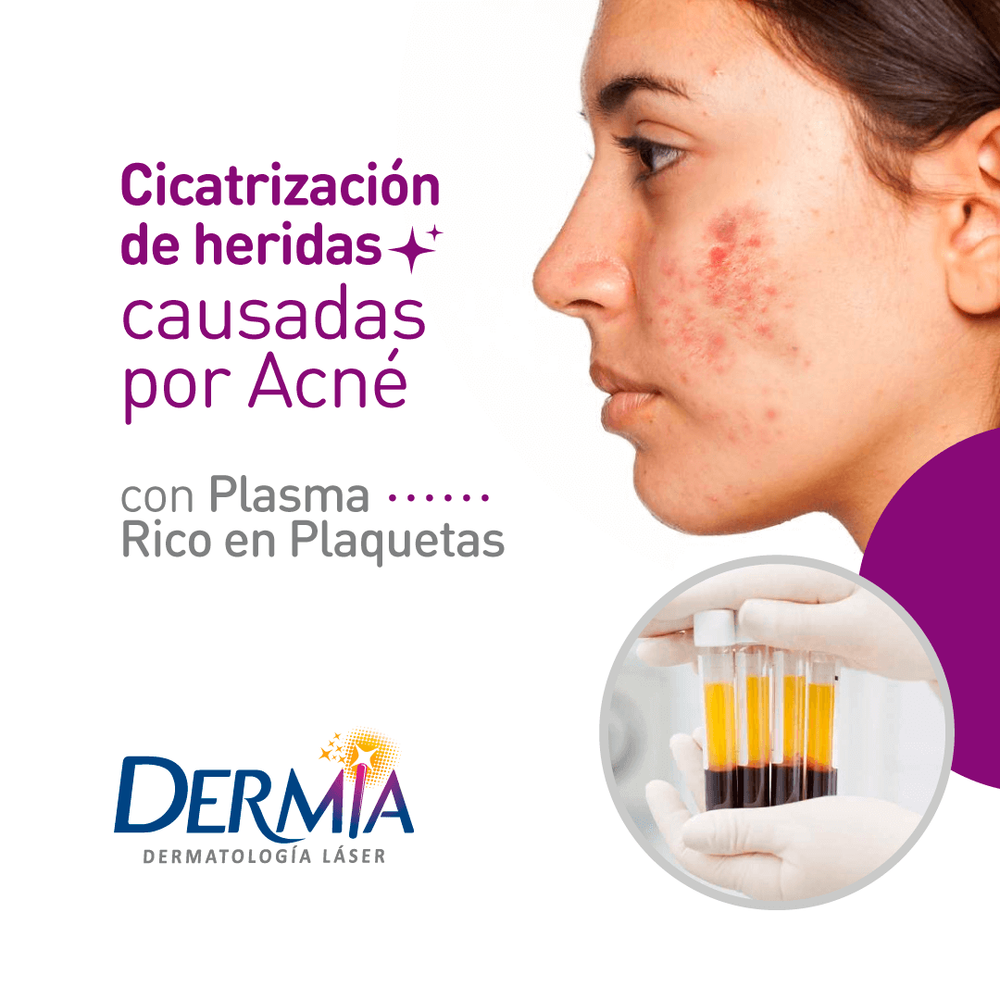

Biolifting
Se realiza la infiltración de ácido hialurónico (Restyline Vital) con vitaminas (Revitacare) para conseguir una revitalización facial que devuelva a la piel hidratación y tersura eliminando pequeñas arrugas, flacidez, sequedad.